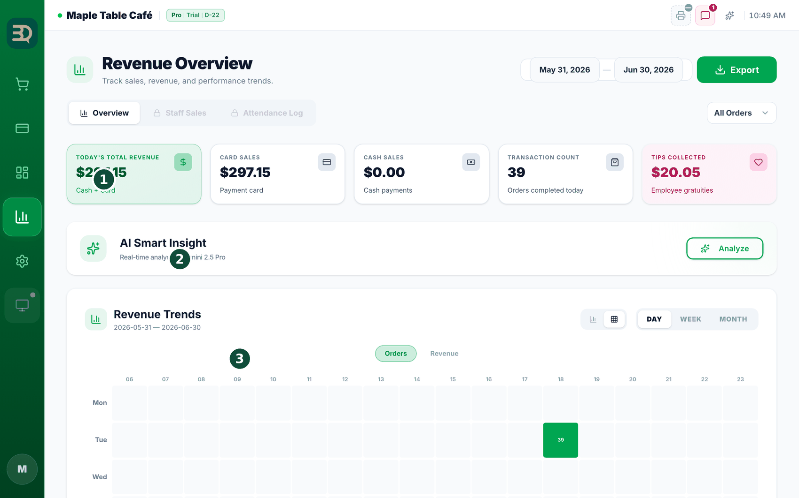
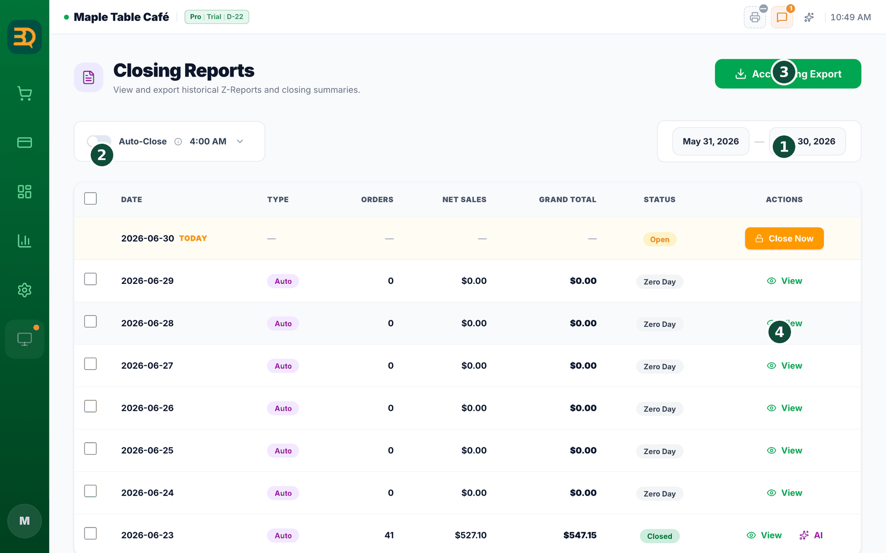
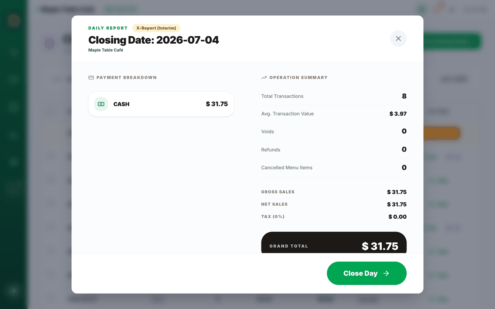
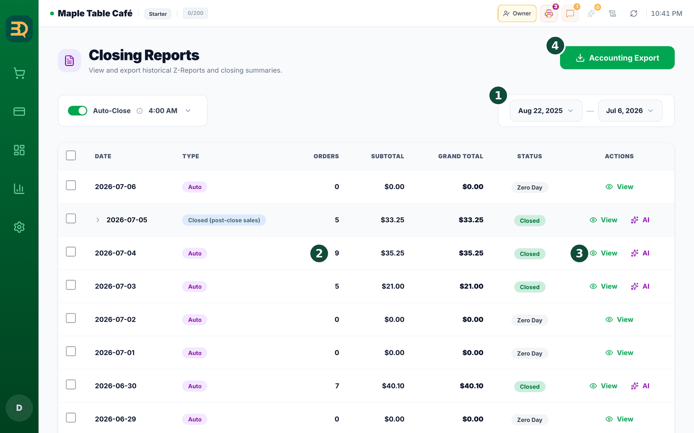
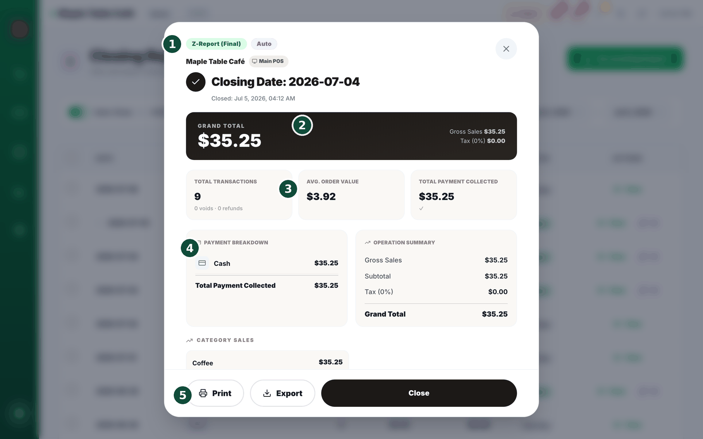
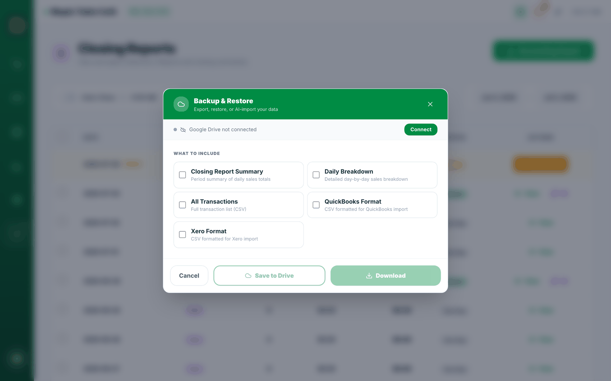
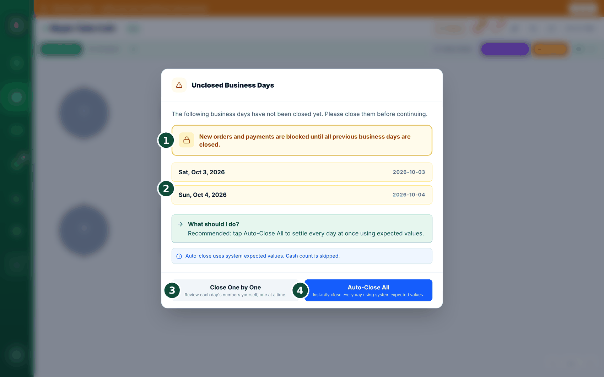
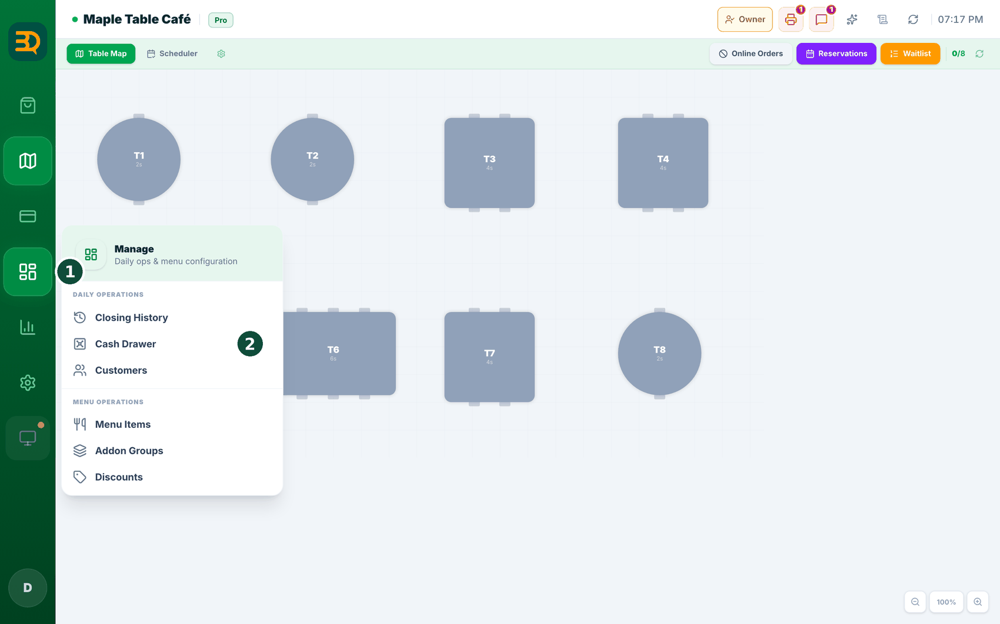
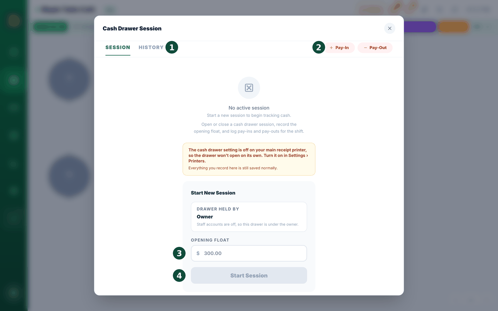

Al final del día revisa cómo le fue a la tienda y "cierra" el día. Esto fija las cifras del día para que queden seguras. Así se hace.

Estadísticas y datos diarios① Total Sales y las demás tarjetas de totales · ② pestañas Staff Sales y Attendance Log (bloqueadas en el plan Starter) · ③ gráfico Revenue Trends

Informes de cierre① Close Now: iniciar el cierre del día · ② interruptor Auto-Close · ③ Accounting Export · ④ ver un informe Z anterior

Cerrar el día (informe Z)① tipo de informe (X = provisional, Z = final) · ② total general · ③ resumen de la operación · ④ Closed by: la fila superior son etiquetas de rol y la inferior, etiquetas del personal (las del personal aparecen cuando el complemento Staff está activado) · ⑤ Close Day

Closing Reports — por día① rango de fechas · ② Orders · Grand Total · ③ View (abre el informe Z) · ④ Accounting Export
Abra Stats (empieza en Revenue Overview) para ver sus ventas, cómo pagaron los clientes, sus productos más vendidos y lo que vendió cada miembro del personal.
Lea sus datos diarios con IA (Pro y superiores). Es una nota breve en palabras sencillas sobre su día, con consejos útiles. (Los planes Business también reciben uno por correo cada semana).
Cuente el efectivo de su cajón y compruebe que coincida con la cifra que muestra BrewDesk. Agregue el dinero que haya puesto y anote el que haya retirado.

Informe Z① Z-Report (Final) · ② Grand Total · ③ Total Transactions · ④ Payment Breakdown · ⑤ Print · Export · Close
Cuando el efectivo coincida, vaya a Manage › Closing History (la pantalla se titula Closing Reports), toque Close Now (Cerrar ahora) y luego Close Day (Cerrar día) en la ventana que se abre. Esto guarda un resumen completo del día, llamado informe Z.
¿Qué es cerrar el día? Simplemente significa terminar la jornada y guardar los totales. Hacerlo cada noche mantiene ordenados sus registros de dinero.
Los pedidos de práctica se marcan, no se ocultan. Todo lo que registró antes de poner la tienda en marcha ahora lleva una etiqueta Sandbox data en su historial de pagos y en su historial de cierres: "Recorded during practice mode, before this store went live.". Su pantalla Stats (Estadísticas) va más allá y los deja fuera de las cifras, así que sus ventas y las ventas del personal son solo operaciones reales. Si sus totales parecen más bajos que antes, este es el motivo: ahora son correctos.
¿Hizo un reembolso parcial hoy? El informe Z muestra una línea Refunds (Reembolsos) en ámbar para los reembolsos parciales. Ese importe ya está incluido en el Grand Total (Gran Total) que aparece debajo; la línea está ahí solo para que las cifras cuadren con claridad para usted o su contador. En el informe de análisis que descarga desde Stats (CSV), "Net Profit" ahora se llama Net Revenue (after tax), para recordar que es un ingreso, no una ganancia, ya que no se resta el costo de la mercadería. El archivo Excel de Analytics de Backup & Restore puede seguir usando el nombre anterior.
¿Regaló algo hoy? El resumen de cierre ahora muestra una línea aparte bajo Discounts: "FREE ITEMS (3)" con Not deducted from total (No se resta del total) debajo. Gratis no es lo mismo que descontado: un descuento es dinero al que usted decidió renunciar en una venta; un regalo es mercadería que salió sin que entrara nada. Verlos por separado es como se da cuenta cuando "solo uno por cuenta de la casa" se convierte en veinte por semana.
¿Redondea el efectivo a la moneda más cercana? Si activó el redondeo de pagos en efectivo, el desglose de pagos agrega una línea: Cash Rounding, justo debajo de Total Payment Collected, con "Coins not taken on cash payments. Payment Collected + this = Grand Total." debajo. Esa línea explica por qué difieren lo cobrado y el total general, y es la cifra que debe darle a su contador. Si el redondeo está desactivado, o hoy no se redondeó nada, la línea no aparece.
Cancelar un pedido siempre pide un motivo. Ya sea que anule un pedido pendiente al cerrar, los anule todos a la vez o cancele un pedido en el salón, aparece el mismo recuadro: Wrong entry, Customer left, Test order u Other (type a reason). El botón de confirmar sigue en gris hasta que elija uno. Las cancelaciones sin motivo son precisamente las que después querrá poder explicar.
Para presumir
Sus cifras, explicadas en palabras sencillas. Los datos diarios le dicen qué pasó y qué hacer a continuación, no solo una página llena de números.
Exportar sus ventas
Entregue sus cifras a su contador con un toque. Así se hace. (La ventana se titula Backup & Restore (Copia y restauración), la misma que se describe en Copias de seguridad).

Exportación contable — la ventana se titula "Backup & Restore"① qué incluir · ② formatos listos para QuickBooks / Xero · ③ Save to Drive (después de conectar Google Drive) · ④ Download
En la página Closing Reports (Manage › Closing History), toque Accounting Export (Exportación contable). Se abre una ventana titulada Backup & Restore (Copia y restauración).
Marque qué incluir: Closing Report Summary (Resumen del cierre), Daily Breakdown (Desglose diario), All Transactions (Todas las transacciones), o un formato listo QuickBooks Format (Formato QuickBooks) / Xero Format (Formato Xero).
Toque Download (Descargar) para guardar el archivo, o Save to Drive (Guardar en Drive) para enviarlo a su Google Drive. El formato depende de lo que marcó: Closing Report Summary y Daily Breakdown se generan como Excel (.xlsx); All Transactions, QuickBooks Format y Xero Format, como CSV.
Save to Drive solo funciona una vez conectado Google Drive. Si la parte superior de la ventana dice "Google Drive not connected", toque Connect (Conectar) al lado (consulte Copias de seguridad). Download (Descargar) funciona en cualquier caso.
Contabilidad fácil: esto simplifica sus registros; solo entregue el archivo a su contador.
Pedidos tardíos y días no cerrados
Alrededor del cierre a veces ocurren dos cosas: llega un pago después de haber cerrado el día, o simplemente olvidó cerrar un día. BrewDesk resuelve ambas, y nunca modifica su informe Z original.
Llegó un pago después del cierre: cierre adicional
Si cobra un pago de un día que ya está cerrado, BrewDesk primero le advierte: "This business day is already closed.". El pago se procesa igualmente con normalidad.
Un poco después aparece un aviso: Additional Closing Needed (Se necesita un cierre adicional). Toque Review & Close (o Not Now (Ahora no) para hacerlo más tarde).
Revise los pedidos tardíos de la lista y toque Confirm Additional Closing (Confirmar Cierre Adicional). BrewDesk guarda un informe aparte llamado "Additional Closing #1"; su informe Z original nunca se toca.
¿Necesita el papel de nuevo? Abra el informe de cierre de ese día: cada cierre adicional aparece como una etiqueta que puede tocar para reimprimirlo. (Los cierres adicionales imprimen solo los totales, sin desglose por método de pago ni por categoría).
Olvidó cerrar un día

Unclosed Business Days (Días no cerrados)① aviso de que los nuevos pedidos y pagos están bloqueados · ② los días todavía abiertos · ③ Close One by One · ④ Auto-Close All
La próxima vez que abra BrewDesk, una ventana Unclosed Business Days (Días no cerrados) muestra los días que no cerró. Los nuevos pedidos y pagos quedan en pausa hasta que se cierren esos días.
Lea "What should I do?" en la parte superior. La opción fácil es Auto-Close All (Cerrar todo automáticamente): cierra de una vez todos los días pendientes usando los totales esperados por BrewDesk (se omite el conteo de efectivo).
¿Prefiere revisar cada uno? Toque Close One by One (Cerrar uno por uno). Si un día todavía tiene pedidos sin pagar, toque Settle (Liquidar) para cobrarlos o anularlos primero.
Cobrar una cuenta que ya está abierta sigue funcionando. Solo se pausan las operaciones nuevas. Un pedido que ya está en una mesa se puede seguir cobrando: Pay Now (Pagar ahora) y Split siguen disponibles, así que puede cobrar, cerrar el pedido y luego cerrar el día.
La cifra que muestra es la real. Si se rechaza el cierre porque una cuenta sigue sin pagar, el mensaje le dice cuántos pedidos está esperando realmente la caja, para que sepa qué tiene que cobrar.
¿Por qué bloquear las ventas nuevas? Cerrar los días en orden mantiene honestos sus totales, para que sus informes (y las cifras de su contador) siempre cuadren.
Cajón de efectivo
Puede cuadrar el efectivo de su cajón en cada turno. Ponga el monto inicial por la mañana, anote el dinero que agrega o retira y, al final, cuéntelo y vea si coincide.
Dónde encontrarlo
El menú Manage (Gestionar) de arriba → Cash Drawer (Cajón de efectivo). Solo el propietario y los gerentes ven esta opción del menú.

Abrir el cajón de efectivo desde el menú Manage① ícono Manage en la barra lateral · ② Cash Drawer

Iniciar una sesión del cajón de efectivo① pestañas SESSION / HISTORY · ② botones Pay-In / Pay-Out · ③ OPENING FLOAT (monto inicial) · ④ Start Session
Al abrir, toque Start Session (Iniciar sesión) e ingrese el monto inicial que puso en el cajón.
Durante el día, anote el dinero que agrega o retira como Pay In o Pay Out: depósitos bancarios, reparto de propinas, reposición de cambio, etc.
Al final, toque "END SESSION" e ingrese lo que realmente contó. Hay dos formas: Enter Total (Ingresar total) para escribir un solo total, o Count Denoms (Contar denominaciones) para ingresar cuántos billetes y monedas hay de cada valor y que lo sume por usted.
BrewDesk muestra lado a lado Expected (Esperado), Counted (Contado) y Variance (Variación). Se suman las ventas en efectivo y se resta el dinero devuelto como Cash Refunds (Reembolsos en efectivo).
Luego toque Close Day (Cerrar día): las cifras del cajón pasan al informe Z de ese día junto con todo lo demás.
No contar se registra como "no contado", no como "diferencia cero". Si termina sin ingresar nada, BrewDesk no inventa una diferencia de cero: escribe "Cash wasn't counted.". Así, cuando lo revise más adelante, "cuadró" y "nadie contó" no se verán igual.
¿El cajón no se abre solo? La pantalla le dice por qué: ① todavía no hay una impresora de recibos configurada, ② la opción del cajón de efectivo está desactivada en su impresora de recibos principal (actívela en Settings › Printers), o ③ este dispositivo es una caja secundaria (Sub POS). En cualquier caso, sus cifras se siguen registrando.
Si todavía hay pedidos sin pagar abiertos, BrewDesk pregunta una vez más antes de cerrar el cajón: "N unpaid order(s) still open for today. End the drawer session anyway?". Así evita cerrar el cajón mientras una cuenta sigue pendiente.
Cerrar el cajón antes que el día está bien. Cuéntelo, toque END SESSION y luego Close Day: lo que contó y la diferencia siguen apareciendo en el informe de cierre y en la impresión.
Un cajón abierto ahora mantiene abierto el día. Si una sesión del cajón sigue en curso, el botón Close Day (Cerrar día) aparece en gris y se muestra una línea roja: "N cash drawer session(s) still open — count and end the drawer to close the day.". Cerrar el día significa que el dinero también está cuadrado, así que BrewDesk no le deja dar por cerrado un cajón que nadie contó.
La salida está ahí mismo. Junto a ese mensaje hay un botón Open drawer (Abrir cajón): tóquelo, cuente el efectivo, toque END SESSION (FINALIZAR SESIÓN) y el botón Close Day vuelve a funcionar. Nunca tiene que buscar entre menús para desbloquearse.
¿Alguien se fue sin cerrar el cajón? La pantalla del cajón muestra "N cash drawer(s) were never closed": "Someone left without ending the drawer. You cannot count it now, so closing it here records it as not counted — no number is invented." Toque Close without counting (Cerrar sin contar) y podrá continuar. El día queda registrado honestamente como "Cash wasn't counted" en lugar de un cero prolijo.
Primero cuente; las cifras vienen después. Hasta que escriba lo que contó, BrewDesk oculta el total esperado (y las líneas de ventas en efectivo y de reembolsos en efectivo que lo componen). En su lugar dice "Shown after you enter what you counted" y, debajo, "Count the drawer first, then the numbers appear. This is so the count stays a count.". Su fondo inicial y sus ingresos y retiros siguen visibles todo el tiempo: los hizo usted, así que no hay nada que ocultar.
Si el dinero no coincide, se requiere una línea. Cuando la diferencia no es cero, BrewDesk pregunta "Why is it different?" y no le deja cerrar el cajón hasta que escriba algo (un espacio en blanco no cuenta). Lo anima con "Write one line before closing. In three days nobody will remember.", y tiene razón. Si la diferencia es cero, no pregunta nada.
A quién pertenece el cajón se elige, no se escribe. El antiguo campo de texto libre para el nombre desapareció. Si usa cuentas de personal, elija a la persona de la lista en Drawer held by (Responsable del cajón). Si no usa cuentas de personal, simplemente dice Owner (Propietario): "Staff accounts are off, so this drawer is under the owner.". El campo Recorded by (Registrado por) de un ingreso o retiro ahora es de solo lectura y sigue a la misma persona, así que "quién sacó ese dinero" solo tiene una respuesta.
¿Sale dinero del cajón para compras? Ahora hay un motivo Business expense (Gasto del negocio) en Pay-Out, junto a Safe Drop, Tip Out, Bank Drop y Other. Dele su propio motivo y a fin de mes podrá sumar realmente adónde fue el efectivo.
¿Escribió mal el fondo inicial? Aparece un botón Fix opening float (Corregir fondo inicial) mientras todavía no haya pasado nada: ninguna venta en efectivo, ningún ingreso, ningún retiro. Después de la primera venta en efectivo desaparece, porque a esas alturas cambiar el monto inicial movería en silencio una diferencia real a otro lugar. A partir de ese momento, escríbalo en el motivo de la diferencia al cerrar. La corrección se agrega como nota (quién, cuándo, la cifra anterior); nunca sobrescribe el original.
Una franja roja que no se puede descartar. Si un cambio del cajón no llega al servidor, verá "This drawer has not been saved": "The last change did not reach the server. If you refresh now, the float, pay-ins and count are gone. Check the network and make any change again.". A propósito no hay botón para cerrarla. Un mensaje que se puede deslizar es un mensaje que se olvida, y actualizar la página haría perder el cajón del día.